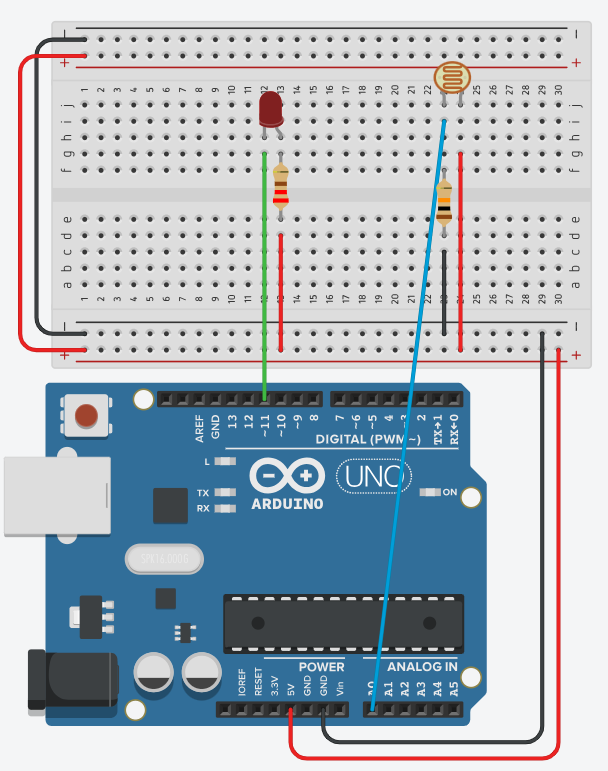

LDR: lichtmeting
Gebruik een LDR in serie met een weerstand om licht te meten, en laat de led feller branden naarmate het donkerder wordt.
Een LDR (Light Dependent Resistor) is een weerstand waarvan de waarde afhangt van hoeveel licht erop valt. Je Arduino kan geen weerstand meten, alleen spanning, dus zet je de LDR in serie met een vaste weerstand tot een spanningsdeler. Het punt tussen de twee lees je in met analogRead(). Om de gemeten waarde daarna om te keren naar een helderheid gebruik je map() met een omgedraaid uitvoerbereik, zoals bij de vorige oefeningen.

Vragen
Bekijk eerst de datasheet van de LDR en beantwoord onderstaande vragen.
1 MOhm.
9 kOhm.
100 Ohm. Je leest dat af op de grafiek uit de datasheet:

2 kOhm. Je vertrekt van het schema van de spanningsdeler:

en van de formule van de spanningsdeler:

De vaste weerstand hoort in het midden van het bereik dat de LDR doorloopt, en dat midden is het meetkundig gemiddelde: de vierkantswortel uit het product van de laagste en de hoogste weerstand. De LDR zakt bij helder licht tot ongeveer 400 Ohm en klimt in het schemerdonker tot ongeveer 9000 Ohm:
1897 Ohm bestaat niet als weerstand, dus kom je uit bij 2 kOhm. Vul je de spanningsdelerformule in voor de drie mogelijkheden, met de LDR als R1 en de vaste weerstand als R2, dan zie je dat 2 kOhm veruit het grootste verschil tussen de minimum- en maximumspanning oplevert:
| R2 (vast) | U2 bij 400 Ohm (licht) | U2 bij 9000 Ohm (donker) | Verschil | analogRead() |
Stappen |
|---|---|---|---|---|---|
| 1 Ohm | 0,01 V | 0,00 V | 0,01 V | 0 tot 3 | 3 |
| 2 kOhm | 4,17 V | 0,91 V | 3,26 V | 186 tot 853 | 667 |
| 10 kOhm | 4,81 V | 2,63 V | 2,18 V | 538 tot 984 | 446 |
Zo reken je de middelste rij uit, met R2 = 2000 Ohm en de LDR op 400 Ohm:
De kolom analogRead() volgt uit die spanning: 4,17 V van de 5 V, maal de 1023 stappen die de ingang teruggeeft, is 853. Onthou die twee grenzen van 186 en 853, want je hebt ze straks nodig in je map().
Waarom je hier het meetkundig gemiddelde neemt en niet het gewone gemiddelde, en waarom je met 400 tot 9000 Ohm rekent in plaats van met de 100 Ohm tot 1 MOhm uit de datasheet, staat uitgewerkt op De spanningsdeler.
De lichtgevoelige laag op een LDR bestaat uit cadmiumsulfide, en cadmium is een zwaar metaal dat de Europese RoHS-richtlijn beperkt. Fabrikanten zetten er daarom een fotodiode of een fototransistor in, die hetzelfde meet zonder cadmium. In een labo blijft de LDR bruikbaar omdat hij goedkoop is en je hem uitleest met dezelfde spanningsdeler die je hier bouwt.
Indienen
Sla je oefening op.
Overloop volgende checklist om je oefening zelf te evalueren:
Oplossing
Je wil de led feller laten branden naarmate het donkerder wordt, dus je
moet de meting omkeren. Dat doe je door bij map()
het uitvoerbereik om te draaien: de laagste meting wordt 255 en de
hoogste wordt 0.
Het invoerbereik is daarbij niet 0 tot 1023. Uit de berekening hierboven weet je dat deze schakeling tussen ongeveer 186 en 853 blijft. Vul je toch 0 en 1023 in, dan haalt je led nooit zijn uitersten: in het schemerdonker blijft hij op 209 in plaats van 255, en in het licht zakt hij maar tot 43 in plaats van 0. Een derde van je helderheidsbereik gebruik je dan nooit.
constrain() knipt de meting af op die twee grenzen. Zonder
die regel geeft map() bij een meting onder 186 een getal
boven 255, en daar kan analogWrite() niet mee overweg.
const int ldrPin = A0; // midden van de spanningsdeler op A0
const int ledPin = 3; // led op een PWM-pin (~)
const int ondergrens = 186; // meting in het schemerdonker, LDR op 9000 ohm
const int bovengrens = 853; // meting bij helder licht, LDR op 400 ohm
void setup()
{
pinMode(ledPin, OUTPUT);
Serial.begin(9600);
}
void loop()
{
int licht = analogRead(ldrPin); // hoger = meer licht
// hou de meting binnen het bereik dat de schakeling echt haalt
int begrensd = constrain(licht, ondergrens, bovengrens);
// omgekeerd: veel licht geeft een lage helderheid, weinig licht een hoge
int helderheid = map(begrensd, ondergrens, bovengrens, 255, 0);
analogWrite(ledPin, helderheid);
Serial.print("licht: ");
Serial.print(licht);
Serial.print(" helderheid: ");
Serial.println(helderheid);
delay(100);
}De 186 en de 853 zijn berekende waarden. Je eigen LDR, je weerstand en het licht in je lokaal wijken daarvan af, dus lees eerst een tijdje de Serial Monitor mee: hou je hand boven de LDR voor de laagste waarde, schijn met je gsm erop voor de hoogste, en pas ondergrens en bovengrens aan naargelang wat je echt ziet.